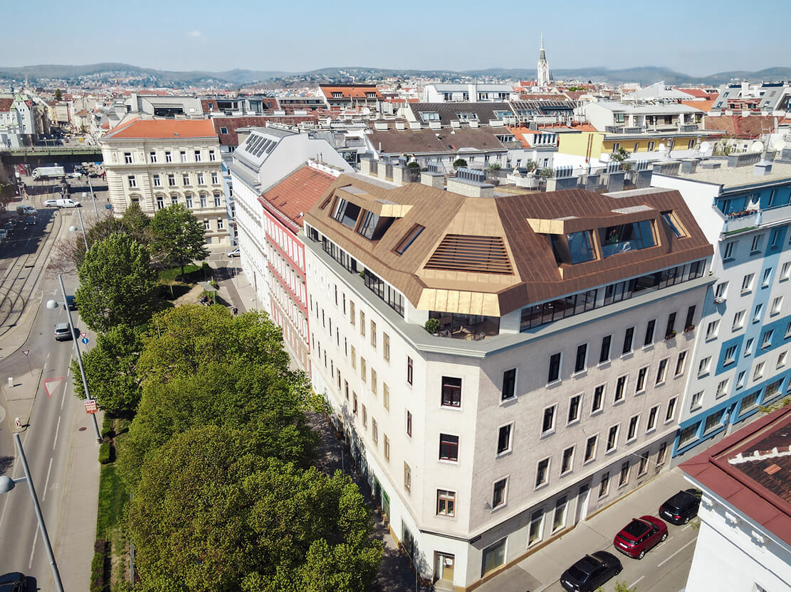
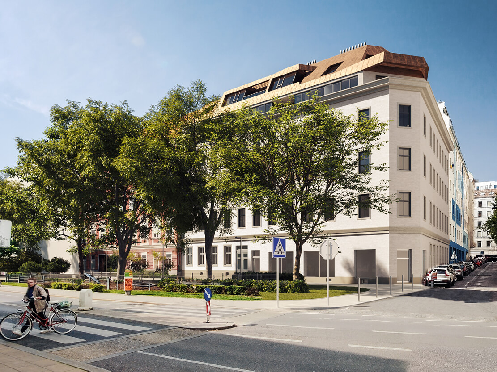
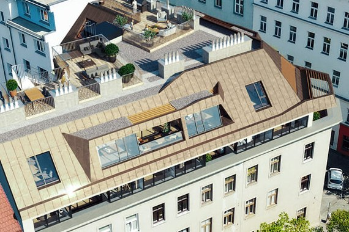
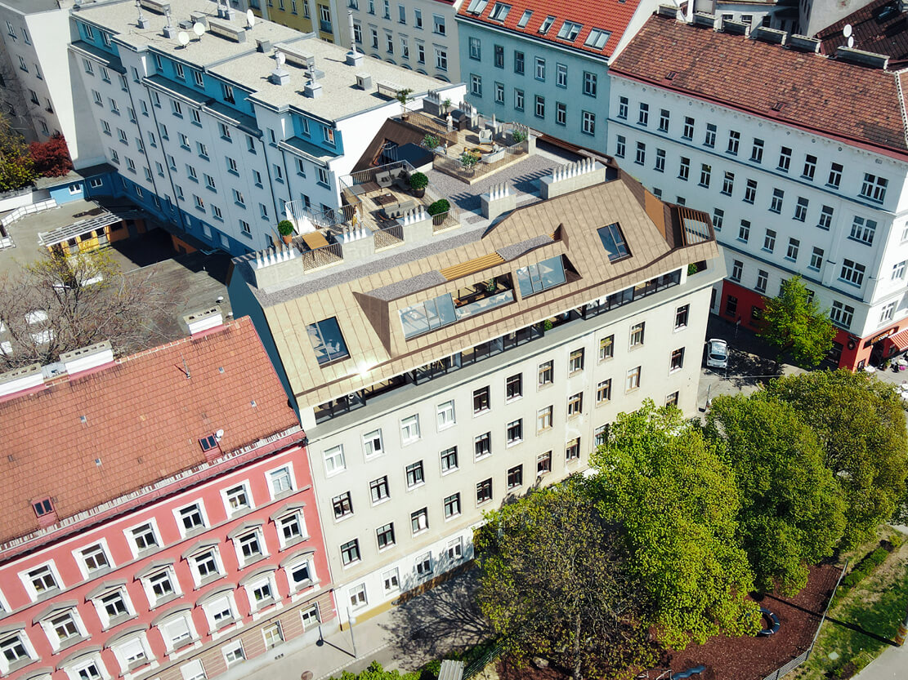
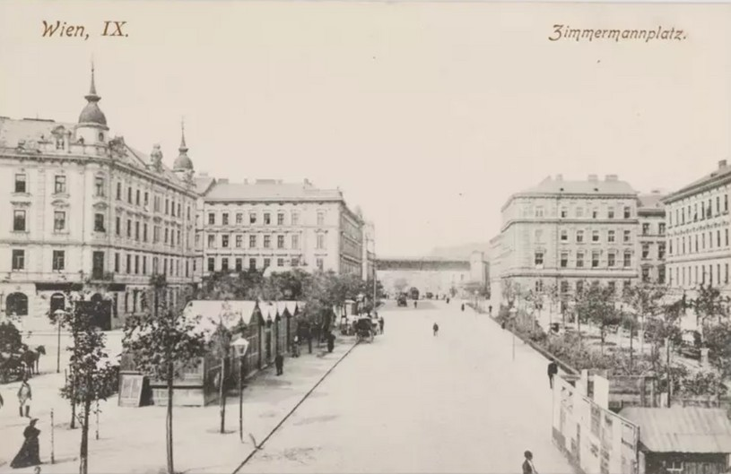
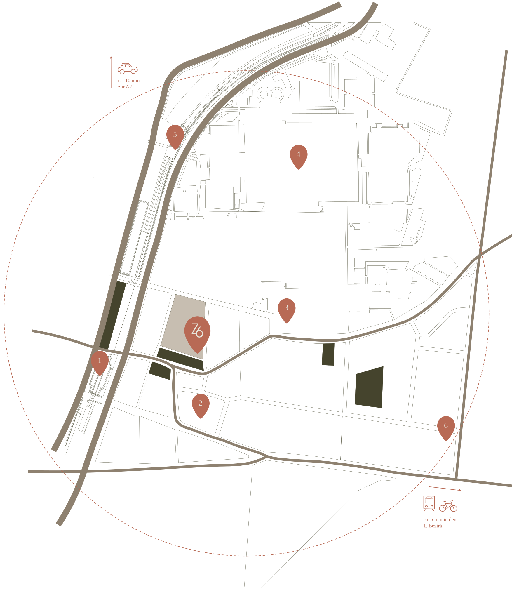
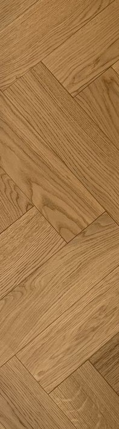
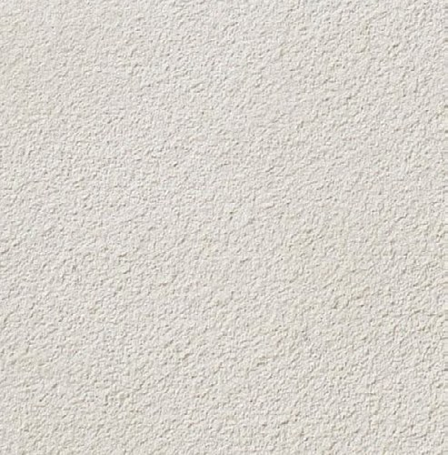
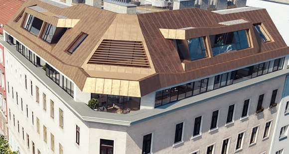

Ein Haus am Platz.
Ein Dach über der Stadt.
21 Wohneinheiten: 15 Altbauwohnungen im Bestand und 6 Neubauwohnungen unter einem neuen Dach, davon 2 Penthäuser. Viele mit Blick auf den Zimmermannplatz oder in den Garten im Hof.
Zu den Wohnungen
Ein Ort mit Geschichte, neu gedacht für zeitgemäßes Wohnen.
Hochwertige Architektur, nachhaltige Bauweise und durchdachte Grundrisse schaffen Wohnraum mit Zukunft. Im gründerzeitlichen Bestand liegen 15 Altbauwohnungen, die sanierten mit Fischgrätparkett. Darüber entstehen im neuen Dachgeschoss 6 Neubauwohnungen mit Loggia, Balkon oder Terrasse, davon 2 Penthäuser mit Dachterrasse.
Das Eckhaus liegt am Zimmermannplatz im 9. Bezirk. Die Wohnungen im Bestand blicken auf den Platz, in den Hof oder als Durchstecker auf beides. Alle Einheiten werden über eine Wärmepumpe versorgt, das Haus verabschiedet sich vom Gas.



Das Bestehende bewahren. Das Neue darüber setzen.
Stiegenhaus und Allgemeinbereiche werden sorgfältig saniert und erhalten hochwertige Oberflächen. Ein neuer Aufzug führt vom Keller bis ins Dach.
Der Platz trägt den Namen eines Wohltäters.
Benannt ist der Platz nach Georg Ritter von Zimmermann, einem Wohltäter. Sein Wahlspruch Labore et Perseverantia, durch Arbeit und Ausdauer, passt zu einem Haus, das sorgfältig saniert und behutsam weitergebaut wird. Der Platz liegt nahe der Währinger Straße, umgeben von historischen Häusern.
Der Alsergrund entwickelte sich vom mittelalterlichen Weinbaugebiet zu einem der bedeutendsten medizinischen und wissenschaftlichen Zentren Europas. Im 18. Jahrhundert wurde hier das Allgemeine Krankenhaus gegründet, im 19. Jahrhundert zog die Universität Wien viele ihrer Institute in den Bezirk.
Das Palais Liechtenstein, das ehemalige Wohnhaus Sigmund Freuds und die Gassen des Servitenviertels prägen den Bezirk bis heute als Ort von Kultur und Wissenschaft.

Der Alsergrund ist Weinbaugebiet vor den Toren der Stadt.
Das Allgemeine Krankenhaus wird eröffnet und wird zum Zentrum der europäischen Medizin.
Die Universität Wien siedelt viele Institute im Bezirk an.
Sanierung des Bestands und Neubau des Dachgeschosses beginnen.
Übergabe der Wohnungen und des Geschäftslokals.

Drei Minuten zur U6. Zwölf zur Universität.
Schematische Darstellung, Wege und Zeiten gerundet.
Der Alsergrund ist ein lebhaftes Abbild urbanen Lebens.
In unmittelbarer Nähe liegen die belebte Liechtensteinstraße und das charmante Servitenviertel mit Geschäften, Banken, Apotheken, Buchhandlungen und Cafés. Der Viktor-Frankl-Park, der Liechtensteinpark und das Alte AKH sind Rückzugsorte für Läufer und spielende Kinder. Zahlreiche Bildungseinrichtungen und Universitäten liegen in Gehweite oder wenige Stationen entfernt.
Altbau im Bestand.
Altbauwohnungen mit 2 bis 4 Zimmern vom Erdgeschoss bis in den 3. Stock. Die sanierten erhalten Fischgrätparkett, die Räume bleiben hoch, der Blick geht auf den Platz oder in den Garten. Durchstecker verbinden beides.
- Fischgrätparkett in den Wohnräumen
- Fußbodenheizung, im Sommer Temperierung über den Boden
- Einzelraumregelung
- Teils mit Balkon oder Terrasse
Wohnungen im neuen Dach.
6 Neubauwohnungen mit Außenflächen: vier im 1. Dachgeschoss mit Loggia, Balkon oder Terrasse, darüber 2 Penthäuser mit Terrasse und Dachterrasse. Ein eigenes Geschoss über den Dächern des Alsergrunds.
- Langdielen, großformatiges Feinsteinzeug, teilweise Naturstein
- KNX Gebäudeautomation
- Splitkühlung, Innengeräte teilweise als Deckeneinbau
- Aufzug mit Penthouse-Steuerung



Was Sie berühren, bleibt.
Eiche, Stein, Putz, Bronze und Grün. Materialien, die mit dem Haus alt werden dürfen.
Ausstattung
Böden
Fischgrätparkett im Bestand, Langdielen im Dachgeschoss. Großformatiges Feinsteinzeug in Bad und Nebenräumen, teilweise Naturstein.
Bad
Markenkeramik und Sanitärgegenstände namhafter Hersteller, großformatige Fliesen, ruhige Flächen.
Klima
Versorgung über Wärmepumpe. Fußbodenheizung im Winter, Temperierung über den Fußboden im Sommer. Dachgeschoss mit Splitkühlung, Innengeräte teilweise als Deckeneinbau.
Außen
Viele Wohnungen mit Balkon, Loggia oder Terrasse, die Penthäuser mit Dachterrasse. Intensive Begrünung der Terrassen, außenliegender Sonnenschutz im Neubau, Verschattung der Dachterrassen.
Garten
Ein hofseitiger Allgemeingarten für alle Bewohnerinnen und Bewohner. Ruhe im Inneren des Blocks.
Haus
Neuer Aufzug vom Kellergeschoss bis ins Dachgeschoss, Penthouse-Steuerung für die Dachwohnungen. Einzelraumregelung im Bestand, KNX Gebäudeautomation im Dach. Stiegenhaus und Allgemeinbereiche mit hochwertigen Oberflächen.
Durchstecker.
Wohnungen, die den Block durchqueren: vorne der Zimmermannplatz mit seinen Bäumen, hinten der Garten im Innenhof. Licht von zwei Seiten, Ruhe auf der einen, Stadt auf der anderen.
Finden Sie Ihre Wohnung.
Hier sehen Sie alle verfügbaren Wohnungen im sanierten Bestand und im neuen Dachgeschoss. Filtern Sie nach Zimmern und Lage im Haus, sortieren Sie nach Fläche.
| Top | Geschoss | Zimmer | Wohnfläche | Freifläche | Status |
|---|
Sprechen wir über Ihre Wohnung.
Grundrisse, Ausstattungsbeschreibung und Preise erhalten Sie direkt vom Exklusivvertrieb. Gerne vereinbaren wir einen persönlichen Termin.